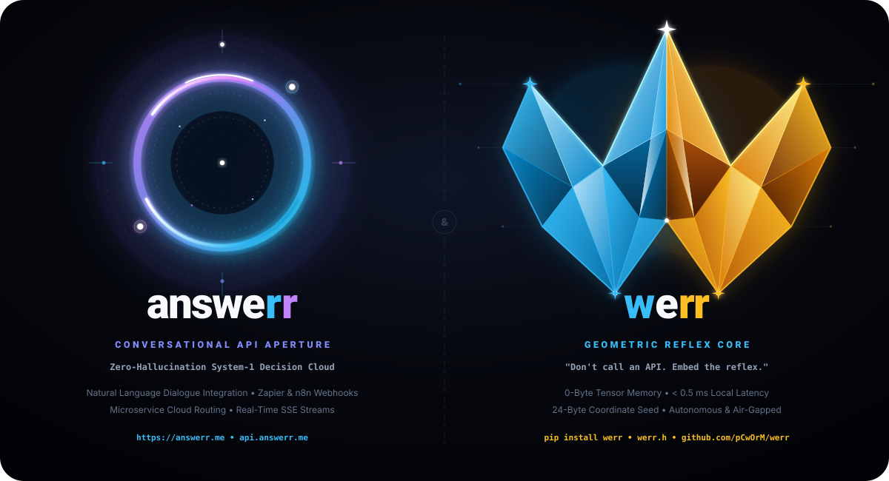

Sohbet Etme.
Karar Werr!
Yazılımlar, API'lar ve otonom sistemler için dünyanın ilk Sistem-1 fraktal karar motoru. Deterministik Mandelbrot sınır dinamiğiyle mikrosaniyede tip-güvenli kararlar üretin; halüsinasyon riskini sıfırlayın.
{
"client_role": "guest",
"auth_valid": false,
"req_per_min": 180,
"target": "/api/v1/export"
}if not response.boolean("allow"):
QUARANTINE_IP(request)
else:
EXECUTE_DIRECT()Geleneksel LLM'lerin Bittiği Yerde Başlayan Refleks
Geleneksel dil modelleri yavaş, pahalı ve olasılıksaldır. answerr & werr ikilisi, refleks hızında kesin kararlar alırken doğal diyalog gücünü korur.
< 0.5 ms Fraktal Refleks
Mandelbrot kaçış dinamikleriyle mikrosaniyelik Sistem-1 omurilik refleksleri. Ağ gecikmesi olmadan yerel tarayıcıda veya sunucuda anında çalışır.
0-Byte Tensör VRAM
Ağır GPU matris çarpmalarına, devasa model ağırlıklarına ve sunucu maliyetlerine son. 0-Byte tensör belleği ile mikrodenetleyicide bile çalışır.
Sıfır Halüsinasyon
Olasılıksal tahminler yerine fraktal sınır geometrisi kullanır. Her durum vektörü için %100 tekrarlanabilir, matematiksel olarak kanıtlanabilir kararlar.
answerr & werr İkiz Ekosistemi
Doğal diyalog gerektiğinde answerr, mikrosaniyelik refleks gerektiğinde werr.

answerr (Bulut & Web Platformu)
Sistem-2 müzakereci yapay zeka, Google Gemini Flash entegrasyonu, web çalışma alanı ve kurumsal API ağ geçidi.
Çalışma Alanına Git →werr (Spinal Reflex Core)
Sistem-1 deterministik omurilik çekirdeği. Sıfır tensör belleği, Mandelbrot fraktal karar motoru. Uygulamanıza gömün (pip install werr).
GitHub'da İncele →3 Satırda Üretime Hazır Refleks
Python veya doğrudan REST API ile sisteminize saniyeler içinde ekleyin.
# 1. Çekirdek motoru içe aktarın (0 tensör bellek gereksinimi)
from werr import WerrEngine
# 2. Motoru başlatın ve operasyonel durumu verin
engine = WerrEngine()
result = engine.decide(
state={"ip": "192.168.1.10", "req_rate": 180, "auth": False},
questions={"allow": {"type": "noul", "instructions": "İzin verilsin mi?"}}
)
# 3. < 0.5 ms içinde deterministik boolean veya choice kararı alın
if not result.answers["allow"].decision:
quarantine_traffic() # Latency: 0.34 ms, Seed: 24 bytes